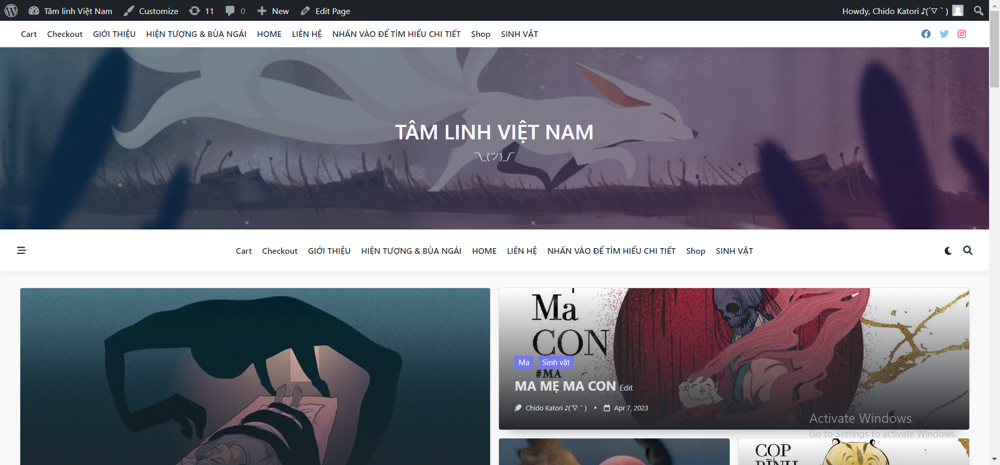
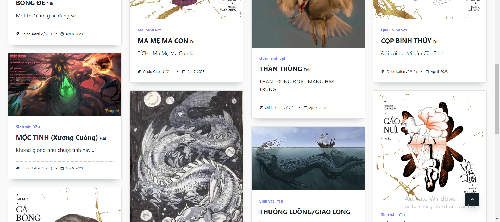
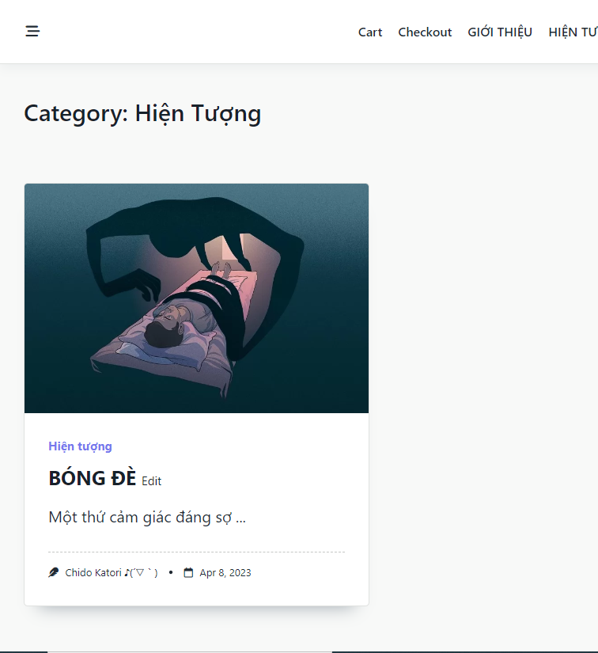
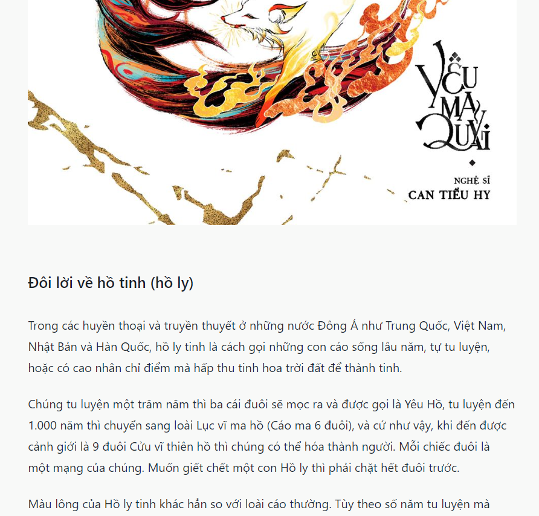
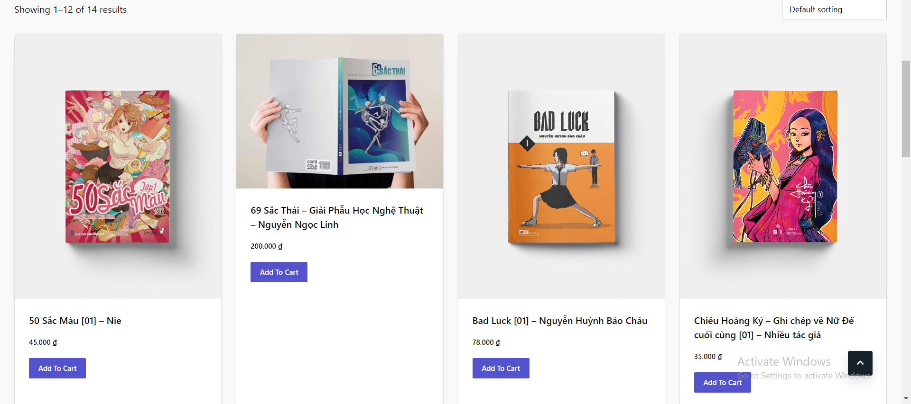

(✌ﾟ∀ﾟ)☞ [ TÂM LINH VIỆT NAM ]
👉*NHẤP VÀO HÌNH BÊN DƯỚI ĐI, NÓ CHUYỂN SANG TRANG ĐẤY ĐÓ*👈
[CƠ MÀ HIỆN CHƯA CÓ LIÊN KẾT VỚI TRANG NÊN LÀ TỪ TỪ RỒI TÍNH VẬY]

Ah yes, đây mới là phần thú vị đây.
Nếu mọi người đã biết hoặc chưa biết, thì đây là trang web do tôi
lập ra. Nội dung chủ yếu là về những sinh vật và hiện tượng siêu nhiên mà người đời đồn đại ở Việt Nam. Cụ
thể thì ở đây có các mục:
1- SINH VẬT

👉THẦN THÚ
Thần thú là những con động vật đại biểu cho sự bình an và cát tường. Chúng đều có tướng mạo đặc biệt, khí
chất thần thánh uy nghiêm mà cũng tràn đầy linh tính.
👉YÊU
Sinh vật có phù phép, thường hại người, theo mê tín (ko bt giải thích ntn nữa:))
👉MA
Còn được gọi là hồn ma, là một từ ngữ theo quan niệm dân gian ở hầu hết các quốc gia để chỉ vong hồn của
người chết xuất hiện ở thế giới của người đang sống.
👉QUỶ
Theo quan điểm của một số tôn giáo, chúng là một số sinh vật (thuộc về cõi siêu hình) có những khả năng siêu
phàm, khỏe mạnh, không hẳn là đều độc ác và xấu xa. Đôi lúc cũng dùng để chỉ các ác thần. Thường là phe đối
lập với các vị thần.
👉QUÁI
Những thực thể là các ngoại lệ kì quái đối với các định chuẩn của một hệ sinh thái nào đó, thường xuất hiện
trong truyền thuyết hoặc truyện kinh dị
*Các định nghĩa về sinh vật trên chủ yếu được lấy từ trên mạng, còn lại do TG tự nghĩ ra*
2- HIỆN TƯỢNG

👉HIỆN TƯỢNG TÂM LINH
Có thể gọi là ‘tâm linh’, là một loại hiện tượng tinh thần đặc trưng ở con người, biểu hiện ở một số
người
như là giác quan thứ sáu, có cơ sở là vết tích của “logic trực giác xuất thần” của loài động vật cấp thấp để
lại trong quá trình phát triển thai người.
👉BÙA NGẢI
Bùa, bùa chú hay bùa ngải là tên gọi chung của các loại vật dụng, thông thường là giấy có viết các ký tự
như
Hán tự, các hình vẽ. Chúng được các thầy trừ tà, phù thủy tạo ra mục đích tốt là trấn yểm, trừ tà, hoặc với
mục đích xấu làm hại người khác.
*Các định nghĩa trên chủ yếu được lấy từ trên mạng, còn lại do TG tự nghĩ ra*
*VỀ NỘI DUNG CÁC BÀI VIẾT*

👉Cơ bản thì 1 bài sẽ gồm các nội dung như:
1- Định nghĩa về sinh
vật/hiện tượng mà tôi viết
2- Khả năng, năng lực mà chúng có
3- Quan niệm trong dân gian về
chúng
4- Quan điểm thời hiện đại
5- Những câu chuyện bên lề

3- SHOP
👉Welp..., để đặc biệt hơn thì ở đây còn có cả shop bán sách nữa, cơ mà đa số chúng
là những bộ truyện tranh khá nổi tiếng ở Việt Nam mà tôi biết. Có bộ mới có 1, 2 tập; có bộ đã hoàn thành;
bộ thì nổi tiếng trong nước; bộ thì đã từng đạt giải quốc tế;... thế nào cũng được
Tiêu biểu:
-Địa Ngục Môn-Can Tiểu Hy
-Bad Luck-Châu Chặt Chém
-Đồng Vọng Dân Gian-Phyllocactus
-Long
Thần Tướng-[Nhiều tác giả]
-...
Về cơ bản thì shop này giới thiệu những bộ cũng khá hay ở trong
nước đến các bạn đọc mua và thưởng thức, đơn giản vậy thôi.